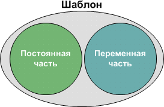
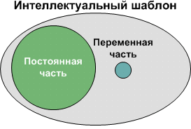
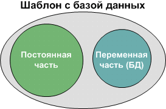
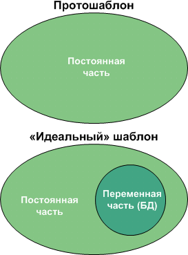

Статья 30. Про шаблоны
 Шаблоны можно разделить (условно, конечно) на множество категорий. Но вначале мы должны определиться, зачем нам шаблон?
Ну, самый простой ответ будет у читателя: — Чтобы легче было работать.
Но это не самое главное в этом вопросе. Главное, сколько вы можете себе позволить времени на разработку. Чем длительнее этот процесс, тем качественнее будет шаблон.
Шаблоны можно разделить (условно, конечно) на множество категорий. Но вначале мы должны определиться, зачем нам шаблон?
Ну, самый простой ответ будет у читателя: — Чтобы легче было работать.
Но это не самое главное в этом вопросе. Главное, сколько вы можете себе позволить времени на разработку. Чем длительнее этот процесс, тем качественнее будет шаблон.

Интеллектуальный
Самый первый мой шаблон брался из старого проекта и клепался на новый лад. Никакого времени на новый шаблон не требовалось. И так я достаточно долго работал. Потом мне представилась возможность сделать шаблон для двух тысяч объектов. В этом случае сроки сдачи были отодвинуты в далекое будущее, и ставка была на результат.
Я начал все с чистого листа. Абсолютно все. Новые рамки, штампы, фигуры и идея. На тот момент вышел очень компактный, сверхсложный (как мне тогда казалось) и полностью автоматический шаблон. Пользователь лишь вводил данные и все. Объект готов.
Но тут надо сделать отступление и рассказать вот о чем: В каждом шаблоне есть постоянная и переменная части. Что такое постоянная часть? Это титульный лист, штампы, адреса объектов, и возможно что-то из наполнения.
Что такое переменная часть? Это та ситуация, которая есть на данном объекте. И тут встает самый главный вопрос перед разработчиком шаблонов. Конечное ли количество вариантов на объектах. Если ответ да, то насколько? Будет ли оправдано создание шаблона в этом случае.
Поэтому в первом случае получалось 72 варианта на 2000 объектов. Соотношение более чем приемлемое для разработки шаблона. И именно из-за огромного количества времени на разработку я смог подумать и о таком факторе как компактность. Для простоты классификации такой тип шаблона я назвал интеллектуальным.

Шаблон с базой данных
Этот тип шаблона я также разрабатывал впервые. Было 18 конечных вариантов и около сотни объектов. Но времени было очень мало. Поэтому переменная часть бралась из базы данных и постоянная разрабатывалась без учета компактности.
Сразу приходит на ум совместить эти два типа — интеллектуальный и с базой данных. Да, конечно, но пока такой задачи не ставилось. Хотя жутко интересный бы получился шаблон. Открыл, выбрал объект по базе и файл готов на печать.

Протошаблон
Это простой шаблон. Шаблон только с постоянной частью. Он может быть интеллектуальным или нет, это все на усмотрение разработчика. Но самое главное, надо понимать, что этот шаблон также создается. Хотя, конечно же, велик соблазн взять уже готовый шаблон, выкинуть из него все лишнее и вот, шаблон готов.
На самом деле это не так. Любой шаблон содержит ошибки, но не ошибки разработчика шаблонов, а программ. Я уже не раз сталкивался с тем, что привнесенные в шаблон объекты «портили» шаблон и его уже нельзя было использовать по назначению. Возникали частые ошибки и т. д.
Про удобство работы с шаблоном также не стоит забывать. Когда сам разработчик работает с шаблоном, это одно, а когда посторонний человек, это совсем другое.
Хороший шаблон — это такой шаблон, с которым может работать любой пользователь, а не только Visio профи, или просто Visio пользователь.

Статьи:
В начало раздела
Автор: Ничков Алексей (Digitall)